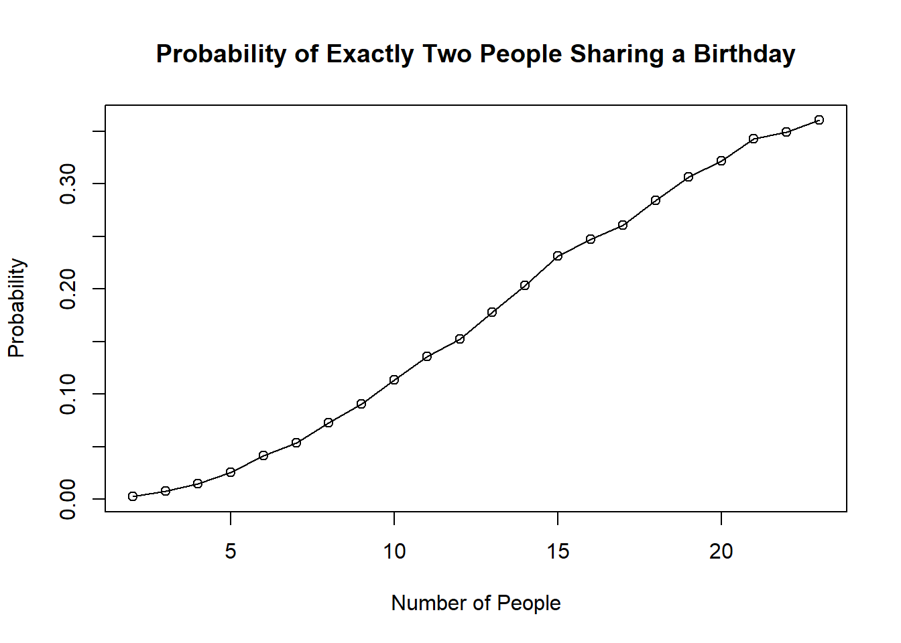

”Uno de los problemas mas contraintuitivos en probabilidad tiene que ver con la de coincidencia de cumpleanos. Cu´al es la probabilidad de que dos personas en un total de 23 celebren su cumplea˜nos el mismo dıa?´´ (Singh, 1997)*. Para este problema ud. realiza una simulaci´on donde n, el numero de personas va desde 2 hasta 50. Calcule, para cada caso la probabilidad de que # 1. exactamente solo dos personas cumplan anos el mismo dıa
# Number of simulationsnum_simulations <-10000# Number of peoplen_people <-2:23# Function to calculate the probabilitycalculate_probability <-function(n) { count <-0for (i in1:num_simulations) { birthdays <-sample(1:365, n, replace =TRUE)if (length(birthdays) !=length(unique(birthdays))) {if (length(birthdays) -length(unique(birthdays)) ==1) { count <- count +1 } } }return(count / num_simulations)}# Calculate probabilities for each number of peopleprobabilities <-sapply(n_people, calculate_probability)# Plot the resultsplot(n_people, probabilities, type ="o", xlab ="Number of People", ylab ="Probability", main ="Probability of Exactly Two People Sharing a Birthday")

#2. dos o mas personas cumplan anos el mismo dıa. Realice la similuacion y presente todos los resultados pertinentes con graficos y tablas. Saque las conclusiones que considere adecuadas
# Calcular las probabilidades para cada número de personasprobabilities <-sapply(n_people, calculate_probability)# Crear un data frame con los resultadosresults <-data.frame("Número de personas"= n_people,"Probabilidad"= probabilities)# Imprimir la tablaprint(results)
Supongamos que tenemos una muestra aleatoria \(X_1, X_2, \ldots, X_n\) de una distribución de Poisson con parámetro \(\lambda\). La función de verosimilitud para esta muestra está dada por:
Para encontrar el estimador de máxima verosimilitud de \(\lambda\), debemos maximizar la función de verosimilitud (o su logaritmo natural, que es más fácil de manipular) con respecto a \(\lambda\).
Por lo tanto, el estimador de máxima verosimilitud para \(\lambda\) es la media muestral \(\bar{X}\).
Algunas propiedades importantes del estimador de máxima verosimilitud \(\bar{X}\) son:
: El valor esperado de \(\bar{X}\) es \(E(\bar{X}) = \lambda\), por lo que \(\bar{X}\) es un estimador insesgado de \(\lambda\).
: \(\bar{X}\) es un estimador eficiente, lo que significa que tiene la menor varianza posible entre todos los estimadores insesgados de \(\lambda\).
: A medida que el tamaño de la muestra \(n\) aumenta, \(\bar{X}\) converge en probabilidad a \(\lambda\).
: \(\bar{X}\) es un estadístico suficiente para \(\lambda\), lo que significa que contiene toda la información relevante sobre \(\lambda\) presente en la muestra.
En resumen, el estimador de máxima verosimilitud para el parámetro \(\lambda\) de una distribución de Poisson es la media muestral \(\bar{X}\), que es un estimador insesgado, eficiente, consistente y suficiente.